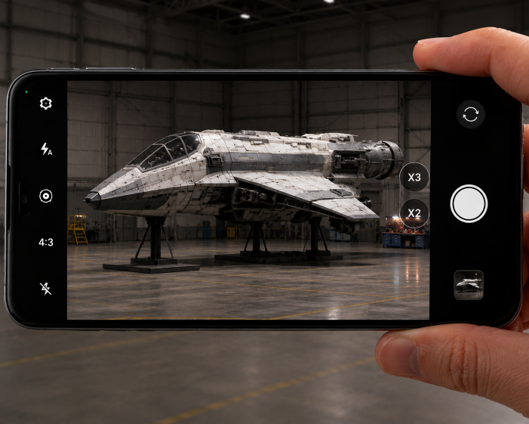
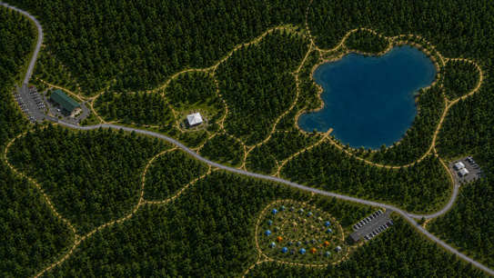

הגענו ל-3 שאלות של תרגול מתקדם!

זהו הסמל המוכר ביותר של דובאי, ואחד המבנים המפורסמים בעולם.
גובהו של המגדל 828.8 מטרים, והוא מחזיק בשיא גינס כמגדל הגבוה בעולם.
במסגרת חוג ציור, ירדן רוצה לצייר תרשים של המגדל על גבי דף שאורכו 29.7 ס"מ.
מהו קנה המידה הגדול ביותר שיאפשר למגדל "להיכנס" במלואו לדף?

קנה המידה של התמונה שצילם הוא 1:300.
יובל לוחץ פעם אחת על כפתור זום המגדיל את התמונה פי 2,
ופעם אחת על כפתור זום המגדיל את התמונה פי 3.
א. מהו קנה המידה החדש של התמונה על המסך?

האם כל ס"מ בתמונה מייצג במציאות אורך גדול יותר או קטן יותר?
יובל מצלם את דגם החללית בקנה המידה שחישבתם בסעיף הקודם (1:50).
ליאור מצלמת את אותו הדגם בקנה מידה של 1:20.
ב. גררו מהמחסן את מידות החללית שיופיעו בתמונה של כל אחד מהם:

האם כל ס״מ בתמונה מייצג במציאות אורך גדול יותר או קטן יותר?
מנהל הבטיחות רוצה להציב עמדת עזרה ראשונה בדיוק ב-1/4 הדרך מתחילת השביל. קנה המידה של התמונה הוא 1:200.
א. באיזה מרחק (במטרים) מתחילת השביל תוצב העמדה במציאות?


ב. מהו שטח המתחם במציאות?

כשעוסקים בשטח, האם מספיק להתייחס לאורך אחד בלבד?
ג. חשבו כמה עמדות משחק אפשר להקים בתוך מתחם ה-VR.
עכשיו חשבו כמה עמדות של 4 מ״ר אפשר להכניס בשטח הזה.
כל הכבוד!
הסתיים שלב התרגול.
אם לא הצלחת לענות נכון על חלק מהשאלות, חשוב להבין מה עדיין לא ברור ולפנות לצ'אט או למורה להסבר נוסף.
עכשיו מגיעה שאלת השיא
יש בה 4 סעיפים. תצליחו ב – 3 לפחות וסיימנו את היחידה!


סיירת הרחפנים הארצית הוקפצה לסייע באיתור מטיילים שאיבדו את דרכם בפארק הלאומי. הרחפן משדר למסך הטאבלט תצלומים בזמן אמת.
עזרו לצוות בשטח לקבל החלטות מבוססות נתונים על סמך המפות וכלי המדידה.
כדי לכייל את הרחפן צריך להגדיר את קנה המידה של המפה שעל המסך.
במציאות, המרחק הישיר ממרכז המבקרים לאגם הוא 2 ק"מ.
אורך אותו מסלול על המפה הוא 8 ס"מ.
חשבו את קנה המידה המצומצם של המפה.

החיפושים כבר בעיצומם, אבל נראה שיש בעיית קליטה של הרחפן באיזור האגם.
המרחק במציאות בין אוהל הפיקוד לאגם הוא 1 ק״מ.
קנה המידה של המפה הוא 1:25,000.
במשאית החילוץ יש 3 גלילי כבל, כל אחד באורך של 350 מטרים.
סמנו את כל האפשרויות המתאימות:
רגע, מה זה?
נועה מצוות החילוץ חושבת שהיא מזהה סימן לאחד המטיילים האבודים באיזור האגם.
צוות הרחפן רוצה לבדוק איך משפיע הזום על קנה המידה של התמונה.
נזכיר – קנה המידה לפני ההגדלה היה 25,000 : 1.
מי מהם צודק?
המטיילים נמצאו, אך אחד מהם שבר את הרגל.
צוות החילוץ הזעיק מסוק שיפנה אותו לבית החולים.
עכשיו צריך לחפש קרחת יער מספיק גדולה להנחתת המסוק.
שני רחפנים צילמו שתי קרחות יער שונות, בקני מידה שונים:
רחפן א׳ צילם קרחת יער בקנה מידה 6,250 : 1. רוחב קרחת היער במסך הוא 1 ס״מ.
רחפן ב׳ צילם קרחת יער בקנה מידה 2,000 : 1. רוחב קרחת היער במסך הוא 2 ס״מ.
איזו קרחת יער מתאימה להנחתת המסוק?


המשימה הושלמה!
המטיילים חולצו, והמטייל הפצוע פונה לבית חולים.
תודה שעזרתם לצוות החילוץ!
כל הכבוד!
השלמת את היחידה בהצלחה!
אני רואה שזה היה קצת קשה.
העיקר שניסית והתאמצת!